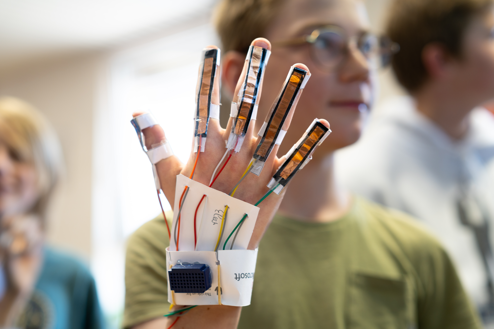

1
Build
Students make a glove with sensors and connect it to an Arduino and five servos.
Project Robotic Hand
The Robotic Hand Project has students build a sensor glove that controls a robotic hand through Arduino and servo motors.
How does it work?
Students build a simple sensor glove and connect it to a robotic hand. The Arduino reads finger movements, controls servomotors and makes visible how data can cause a physical movement.
Students make a glove with sensors and connect it to an Arduino and five servos.
Raw sensor values are converted into usable finger positions: from straight to bent.
The Arduino translates measurements into servo angles so the robotic hand follows the human hand.
The setup
A finger bends, the sensor value changes and the Arduino controls a servo. This lets students immediately see whether their code, wiring and mechanics work together.

What will you learn?
They read finger values and check whether those values match what they see.
They control servos and immediately see what a small change in the code does.
They follow the values per finger and use them to adjust the setup.
They test whether the robotic hand recognises simple gestures such as paper, rock and scissors.
Place in the learning path
The platforms build computational thinking. The projects use that thinking in a cross-curricular assignment in which students build, measure, test and conclude.
For teachers
This project belongs at the end of a pathway in which students have already worked with Arduino. They bring prior knowledge together in a larger system: reading sensors, controlling servos, testing, adjusting and explaining why the robotic hand does or does not respond well.
Materials
An Arduino UNO or similar board that connects to the computer by USB.
Flex sensors or similar sensors to make finger bending measurable.
Five servos that can move the fingers of the robotic hand.
Chrome or Edge for WebSerial. Without hardware, the demo mode can be used.
This project does not use its own analytics or advertising cookies. Input, progress and sensor data are processed in the browser and may be stored locally on the device. A download or export occurs only when the user initiates it. Connected hardware is accessed only after permission is given in the browser. GitHub Pages logs visitors’ IP addresses for security purposes; external services are governed by their provider’s privacy policy.
Original project material by Robbe Wulgaert may be used, copied and adapted free of charge for education, provided that ‘Robbe Wulgaert – AI in de Klas’ is clearly displayed, where reasonably practical with a link to the original project. Commercial sale, paid distribution, sublicensing or repackaging as a commercial product is not permitted without prior written permission. Other uses outside education also require prior written permission. Third-party components remain subject to their own licences.
Connect the Arduino, test the demo mode or use the visualisation to discuss sensor values and movement.